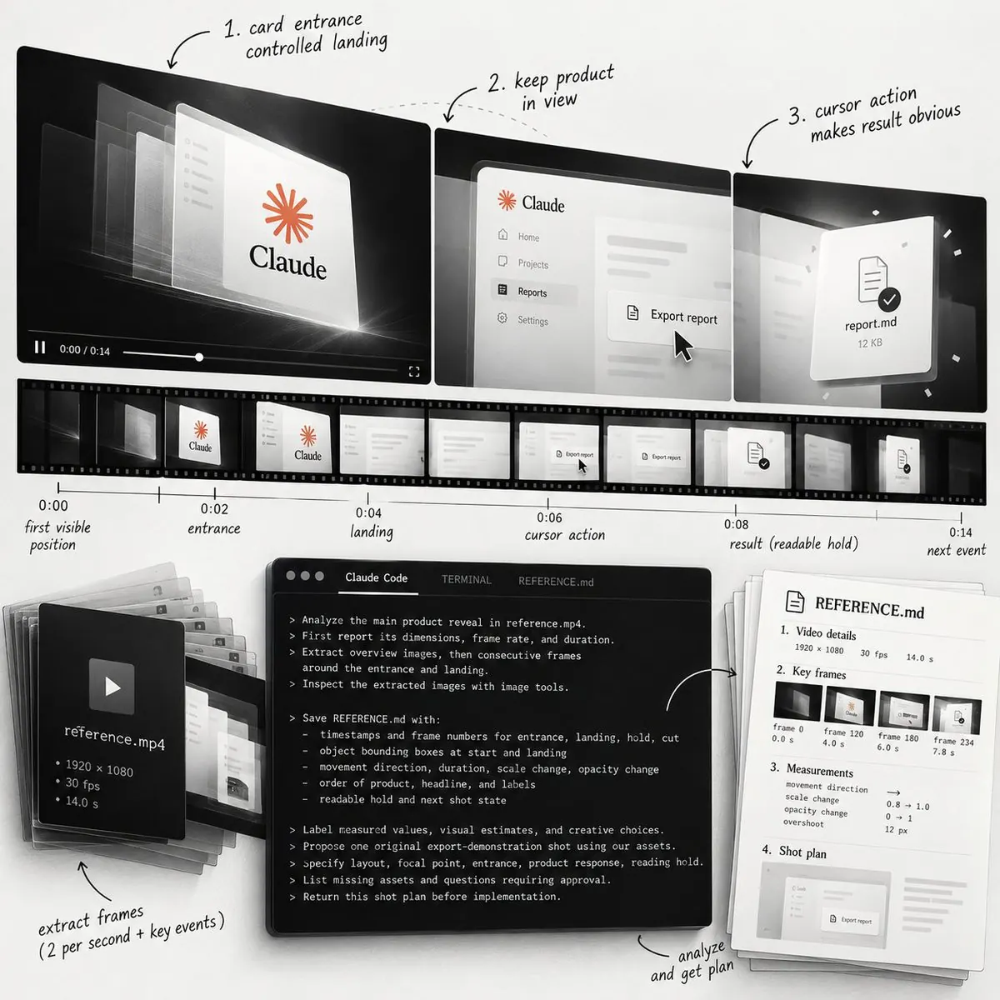
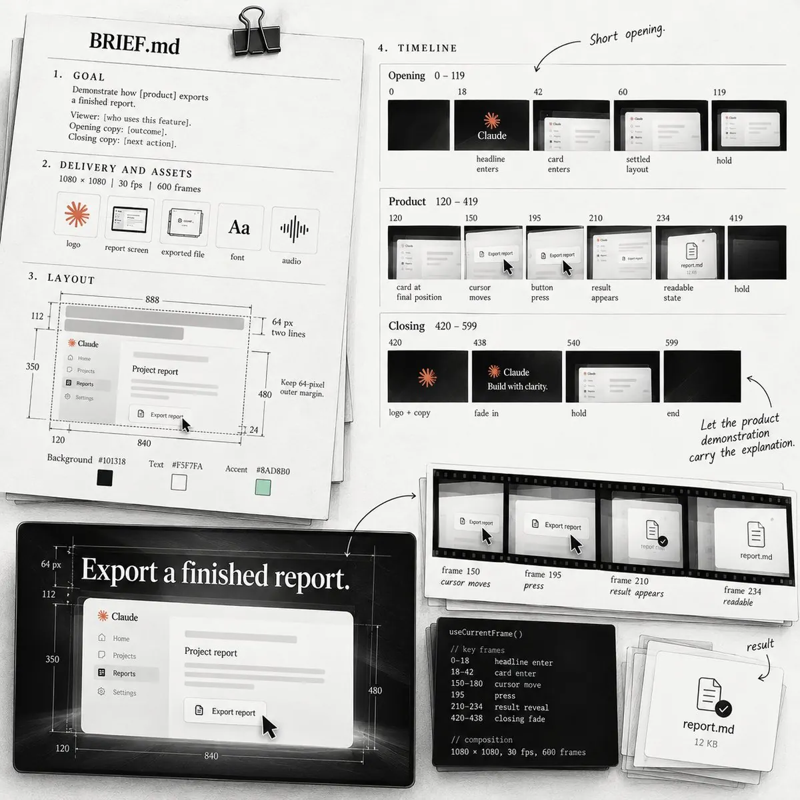
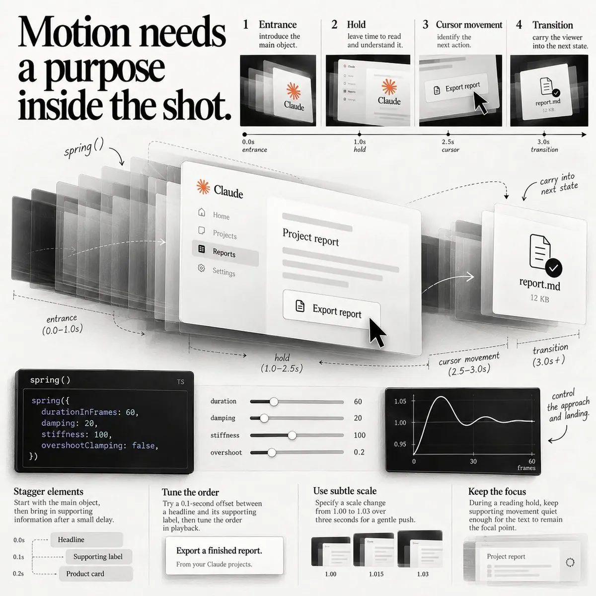
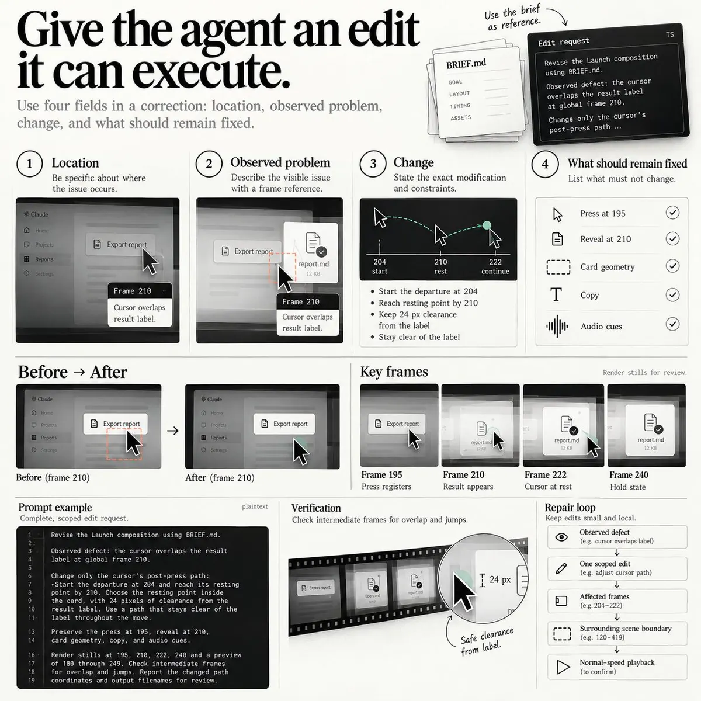
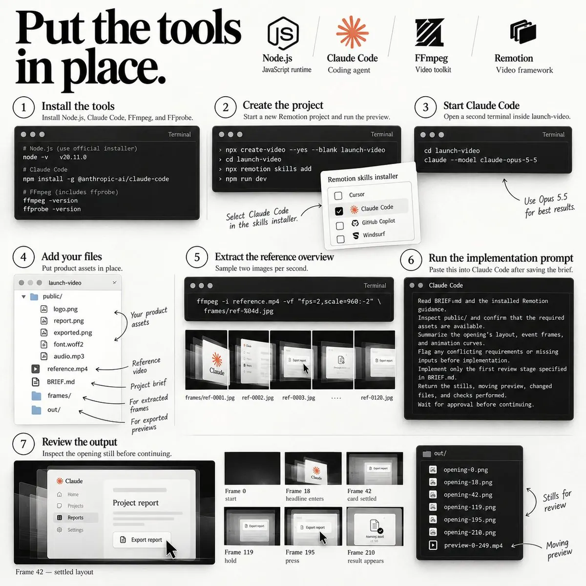
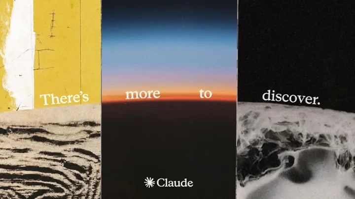

原帖（英文原文 + 译文）
Opus 5.5 can run a whole motion design studio
Sell a 20-second launch clip built from real product screens
Copy the motion engineering prompts and delivery process
Build your offer before the next product launch ↓ [X Article]
Opus 5.5 能撑起一整间动效设计工作室。
用真实的产品界面做一支 20 秒的发布短片，然后把它卖出去。
动效工程提示词和交付流程，拿去直接用。
在下一次产品发布之前，把你的报价准备好 ↓ [X 长文]
beamnxw（@beamnxw，简介 “hyperfixation on AI | always dyor”），2026-10-10 01:53（UTC+8）。截至 2026-10-23 10:05（UTC+8）：472,449 次浏览、642 赞、1,605 收藏、70 转发、20 条回复、20 条引用。作者在帖下唯一的自我回复是 Substack 链接（“my substack :)”）。长文约 1.1 万字符、16 个代码块/提示词、15 张配图（8 张自绘信息图 + 7 张官方文档截图），并嵌入了 Claude 官方的 Opus 5.5 发布帖。
导读
这不是介绍某个 GitHub 项目的帖子，而是作者本人的方法论 + 副业教程长文，所以本页以全文翻译为主体。它和本站已收录的几篇 Opus 5.5 动效文章不同之处在于：它不追求炫技画面，而是把一支 20 秒产品演示当作“可交付、可修改、可报价”的工程件。所有决定都落到帧号上——这是全文唯一的核心思想。
全文骨架：
- 参考片只回答一个问题。按每秒 2 张抽帧，让 Claude Code 写
REFERENCE.md：入场/落位/停留/切换的帧号、包围盒、运动参数，并把“测量值、目测估计、创意提议”分开标注（因为模型的空间估计只是近似）。 - 镜头 = 事件。起始状态 → 光标到位 → 按下 → 揭示结果 → 停留到能读完文件名。示例时间线：第 195 帧按下、第 210 帧出文件、第 420 帧收尾（30 fps）。
- 简报写死五类决定。目标、交付与素材、布局（精确到像素和色值）、分场景帧区间、实现与评审关卡；先只做开场、交静帧、等批准。
- 可复现与有目的的运动。一切由
useCurrentFrame()+ interpolate/spring 驱动，随机必须带种子；入场、停留、光标、转场各司其职；用朗读来校验阅读窗口（8 帧≈0.27 秒是不够的）。 - 评审与修改单。三张静帧（开场/结果/收尾）+ 边界区间局部渲染；修改单四字段，先修信息与可读性，再修时间，最后修细节；另开会话做独立评审，一次最多五条。
- 声音、工具、导出、长片。点击对齐按下帧、重音对齐揭示帧；
npx create-video+npx remotion skills add；ffprobe 验收 1080×1080、30/1、约 20 秒；长片按场景边界状态拆分。 - 卖出去。一功能、一脚本、一支 20 秒视频、一张封面、一轮修改，150 美元试点价；先做样片、找有发布日期的开发者、反馈都用帧号、注意 Remotion 商业许可。
与本站已有页面的关系：同主题最接近的是 kerazcity《Opus 5.5 动效手册》和 Florence《Opus 5.5 动效实验室》——它们讲“单 HTML + seek(t) 画帧”的通用工艺，本文则走 Remotion 框架路线，并且更聚焦“产品演示 + 交付流程”。现成的“产品宣传片” Skill 可对照 huashu-motion；动效术语可查 Motion Prompt 动效名词库；音效素材见 Openverse 免费音效检索；更多 Opus 5.5 成片与提示词见 Opus 5.5 视频大赏、Prompt Motion 画廊和 15 种 MG 动态设计风格。
要点
一切决定落到帧号
入场、揭示、阅读停留、光标动作各有帧号，才能单独修改。秒先写，再按帧率换算：0.6 秒 = 30 fps 下 18 帧；参考片的时间戳要标注它自己的帧率。
参考片是“决定”的来源，不是抄袭对象
只为一件事选参考；输出 REFERENCE.md 并区分测量值/估计值/创意提议，再用自己的 logo、文案和界面做原创镜头。
BRIEF.md 是合同
像素级布局、色值、帧区间、缓动类型、图层顺序、评审关卡都写进去；智能体先只交开场的 5 张静帧和预览，等批准再继续。
阅读窗口要“读出声”来验
从文字可辨认那一刻起算；正常速度朗读，没读完就延长。最长版本的标题若折到三行，先停下改文案或版式。
修改单四字段 + 局部修复循环
位置、观察到的问题、改动、保持不变的部分；缺陷 → 一处修改 → 受影响帧 → 相邻边界 → 正常速度回放。
小而明确的商品
20 秒、1080×1080、一张封面、一轮修改、150 美元试点；脚本、素材、截止、付款、修改范围、使用权和作品集权利开工前谈定。
核实
核实时间 2026-10-23 10:06（UTC+8），仅做文档对照与算术校验，未在本站实际渲染。
- 项目创建命令属实：Remotion 官方 “Coding agents” 文档给出的正是
npx create-video --yes --blank my-video→cd→npx remotion skills add→npm run dev，再在另一个终端启动claude，与原文一致（原文只是把目录名换成launch-video）。 - 帧号算术自洽：30 fps 下 6.5 秒 = 第 195 帧、7.0 秒 = 210、7.8 秒 = 234、14.0 秒 = 420；600 帧 = 20 秒；
--frames=90-149共 60 帧 = 2 秒，跨过开场（0–119）与产品场景（120 起）的边界；局部第 30 帧 + 序列起点 120 = 全局 150。 - 需要读者自行确认的：“150 美元”作者明确说只是示意性试点价；Remotion 对公司/团队有商业许可要求，原文也提示“查看你所用版本的条款”。
评论区观点
- 交付流程比提示词更关键（@SG30520）：“被低估的是交付流程而不是提示词。先锁定客户真实的录屏和品牌色再生成，否则修改轮次会全耗在修模型臆造的 UI 上。”
- 阅读停留最被低估（@oleh_bernatskyi）：大多数发布短片标题闪得太快，没人读得完。
- 商务条款决定成败（@Slonski_rt）：脚本、截止日期、付款和修改范围比动画本身更能决定结果。
- 把“做个酷炫发布视频”变成智能体能执行的分镜表（@0xg4tsby），以及“一个工作流就是一整间工作室”（@shirosignal）、“Opus 要求创意总监头衔了”（@shikamarutsai）这类调侃。
- 质疑与追问：@0xbobaaa 问“你到底卖出去几支了？”（作者未回复）；@wyndomb 问想搭一套做动效视频的系统该怎么做。其余多为“好文/已收藏”。
启发
- “帧号即接口”：人与智能体之间、你与客户之间的所有沟通都用帧号定位，这让修改可执行、可计费、可验收——这是从“玩具”走到“交付”的关键一步。
- 分阶段关卡防失控：先开场静帧 → 批准 → 其余场景，与 kerazcity 的“让模型看自己的帧”评审循环同源，但更偏项目管理。
- 评论提醒的风险：一定用客户真实界面素材，避免模型臆造 UI；样片要用自己的产品或已获授权的产品。
全文翻译：用 Opus 5.5 做动效工程——做能卖钱的发布视频
告诉 Opus：卡片什么时候落定，产品什么时候响应，标题要停留多久才读得完。
给揭示、入场、阅读停留和光标动作分别分配帧号，这样每一项都能单独修改。
如果是一支围绕单个产品操作的短片，就把文案、素材和运动决定都写进一份简报（brief）里。
给参考片一个任务

选一段参考片，只为弄懂其中一件事：
- 一次有受控落位的卡片入场；
- 一次让产品始终留在画面里的转场；
- 一个让结果一目了然的光标动作。
追踪主体从第一次出现到落位的全过程，记下这段运动揭示了什么。
标出文字从什么时候开始可读，以及下一个事件什么时候把注意力拉走。
你在收集的是能用到自己场景里的决定：
- 这个镜头如何引出产品；
- 什么先动；
- 视线应该落在哪里；
- 结果获得多少时间。
用你自己的 logo、文案和产品界面去套用这段卡片入场。
先按每秒两张抽帧做总览，再在重要事件前后检查连续的源帧和时间戳。
把参考片命名为 reference.mp4 放好，然后把下面这段粘贴进 Claude Code：
Analyze the main product reveal in reference.mp4.
First report its dimensions, frame rate, and duration using available tools.
Extract overview images, then consecutive frames around the entrance and landing.
Inspect the extracted images with image tools.
Save REFERENCE.md with:
Source timestamps and frame numbers for entrance, landing, hold, and cut.
Object bounding boxes at start and landing, in source-image coordinates.
Movement direction, duration, scale change, opacity change, and visible overshoot.
The order in which product, headline, and supporting labels appear.
The readable hold and the state carried into the next shot.
Label measured values, visual estimates, and proposed creative choices separately.
For an uncertain value, identify the frames needed to check it.
Use our assets to propose one original export-demonstration shot.
Specify its layout, focal point, entrance, product response, and reading hold.
List missing assets and questions requiring approval.
Return this shot plan before implementation.中文译文
分析 reference.mp4 中主要的产品揭示镜头。
先用可用工具报告它的尺寸、帧率和时长。
提取总览图，然后提取入场和落位前后的连续帧。
用图像工具检查提取出的图片。
保存 REFERENCE.md，内容包括：
入场、落位、停留和切换的源时间戳与帧号。
物体在起始和落位时的包围盒（源图像坐标）。
运动方向、时长、缩放变化、不透明度变化和可见的过冲。
产品、标题和辅助标签出现的顺序。
可读停留时长，以及带入下一个镜头的状态。
把测量值、目测估计和建议的创意选择分开标注。
对不确定的数值，指出需要检查哪些帧。
用我们的素材提出一个原创的“导出演示”镜头方案。
写明它的布局、焦点、入场、产品响应和阅读停留。
列出缺失的素材和需要审批的问题。
在实现之前先返回这份镜头方案。关键位置要对照提取出的图片核实，因为 Claude 的空间估计只是近似值。（Claude 视觉能力说明）
选一款可用的字体，参照参考片的字号比例，按你自己的文字调整。
把镜头写成一个事件
一个产品镜头应该有一件观众能跟得上的事：
- 展示起始状态；
- 把光标放到操作上；
- 让按下生效；
- 揭示结果。
比如一段导出演示：从一份填好的报告开始，按下按钮，然后展示成品文件。
让成品文件在屏幕上停留足够久，久到能读完文件名，再切下一个镜头。
示例里的产品场景使用这条时间线：
4.0s frame120 Report visible, card settled
5.0s frame150 Cursor approaches Export
6.0s frame180 Cursor reaches the button
6.5s frame195 Press registers
7.0s frame210 Finished file appears
7.8s frame234 Result label fully readable
14.0s frame420 Closing shot begins中文译文
4.0 秒 第 120 帧 报告可见，卡片已落定
5.0 秒 第 150 帧 光标接近 Export（导出）按钮
6.0 秒 第 180 帧 光标到达按钮
6.5 秒 第 195 帧 按下生效
7.0 秒 第 210 帧 成品文件出现
7.8 秒 第 234 帧 结果标签完全可读
14.0 秒 第 420 帧 收尾镜头开始第一版预览先用这些数值，然后调整任何感觉仓促或空洞的区间。
在每秒 30 帧下，6.5 秒处的按下落在第 195 帧；收尾镜头从第 420 帧开始。
参考片的时间戳要标注它自己的源帧率。
在每秒 30 帧下，半秒的运动占 15 帧；在每秒 60 帧的参考片里，它占 30 帧。
五项决定属于简报

把这个示例保存为 BRIEF.md，把方括号里的字段替换成真实的素材和文案。
GOAL
Demonstrate how [product] exports a finished report.
Viewer: [who uses this feature].
Opening copy: [outcome, maximum eight words].
Closing copy: [one next action and destination].
DELIVERY AND ASSETS
Composition: Launch, 1080 by 1080, 30 fps, 600 frames.
All timeline numbers below are global, inclusive frame numbers.
Assets under public/: [logo], [report screen], [exported-file screen], [font], [audio].
Inspect asset dimensions and font loading before implementation.
Request missing screens or illegible crops before proceeding.
LAYOUT
Coordinates use the canvas top-left as origin; units are pixels.
Background #101318, primary text #F5F7FA, accent #8AD8B0.
Keep essential content inside a 64-pixel outer margin.
Headline box: x96, y112, width888; 64-pixel font, 1.1 line height, maximum two lines.
Product card: x120, y350, width840, height480, corner radius24.
Fit the supplied screen while keeping the export control readable.
Record button and result anchors from the fitted screen.
Layer order: background, card, product content, cursor, headline.
OPENING: FRAMES 0 THROUGH 119
Headline enters during 0 through 18: vertical offset24 to0, opacity0 to1.
Card enters during 18 through 42: vertical offset60 to0, opacity0 to1.
Use cubic ease-out with clamped endpoints for both entrances.
Hold the settled layout during 42 through 119.
PRODUCT: FRAMES 120 THROUGH 419
Carry the card into frame120 at its exact settled position and scale.
Move the cursor to the measured button anchor during 150 through 180.
Choose a path clear of text and record its waypoints.
Press at195; animate the cursor scale1 at192, to0.92 at195, back to1 at201.
Show the button response at195 using supplied assets or an approved accent overlay.
Move the cursor toward a clear resting point during 204 through 222.
Show the supplied exported-file state at210; finish its reveal by234.
Keep the result readable and stationary through419.
CLOSING: FRAMES 420 THROUGH 599
Cut to the supplied logo and closing copy at420.
Fade the closing copy in during 420 through 438; hold through599.
IMPLEMENTATION AND REVIEW
Drive animated values from useCurrentFrame; expose timing and layout constants.
Use fixed seeds for any variation; keep the camera stationary for this pass.
If audio is supplied, align its audible click with195 and reveal hit with210.
First build the opening and render frames0,18,42,60,119 plus its moving preview.
Check text wrapping, margins, screen readability, and settled positions.
Report changed files, outputs, and unresolved issues; wait for feedback.
After approval, build the remaining scenes and inspect frames120,195,234,419,420,540,599.中文译文
目标
演示 [产品] 如何导出一份完成的报告。
观众：[使用这个功能的人]。
开场文案：[结果，最多八个词]。
收尾文案：[一个下一步行动及其去处]。
交付与素材
合成（Composition）：Launch，1080×1080，30 fps，600 帧。
下文所有时间线数字均为全局帧号，首尾均包含。
public/ 下的素材：[logo]、[报告界面]、[已导出文件界面]、[字体]、[音频]。
实现前先检查素材尺寸和字体加载。
缺少界面或裁切难以辨认时，先索取再继续。
布局
坐标以画布左上角为原点，单位为像素。
背景 #101318，主文字 #F5F7FA，强调色 #8AD8B0。
重要内容保持在 64 像素外边距以内。
标题框：x96，y112，宽 888；64 像素字号，1.1 倍行高，最多两行。
产品卡片：x120，y350，宽 840，高 480，圆角 24。
适配所给界面，同时保证导出控件清晰可读。
在适配后的界面上记录按钮和结果的锚点。
图层顺序：背景、卡片、产品内容、光标、标题。
开场：第 0–119 帧
标题在 0–18 帧入场：垂直偏移 24→0，不透明度 0→1。
卡片在 18–42 帧入场：垂直偏移 60→0，不透明度 0→1。
两段入场都用端点钳制的三次缓出（cubic ease-out）。
42–119 帧保持落定后的布局。
产品：第 120–419 帧
卡片以完全相同的落定位置和缩放带入第 120 帧。
150–180 帧把光标移到测得的按钮锚点。
选一条避开文字的路径并记录其途经点。
195 帧按下；光标缩放 192 帧为 1，195 帧为 0.92，201 帧回到 1。
195 帧用所给素材或经批准的强调色叠层显示按钮响应。
204–222 帧把光标移向一个空旷的停靠点。
210 帧显示所给的已导出文件状态；234 帧前完成揭示。
直到 419 帧，结果保持可读且静止。
收尾：第 420–599 帧
420 帧切到所给 logo 和收尾文案。
420–438 帧淡入收尾文案；保持到 599 帧。
实现与评审
所有动画值都由 useCurrentFrame 驱动；把时间和布局常量暴露出来。
任何变化都用固定种子；本轮镜头保持静止。
如提供音频，让可听见的点击对齐 195 帧，揭示的重音对齐 210 帧。
先只做开场，渲染第 0、18、42、60、119 帧以及它的动态预览。
检查文字换行、边距、界面可读性和落定位置。
报告改动的文件、输出和未解决的问题；等待反馈。
获批后再做其余场景，并检查第 120、195、234、419、420、540、599 帧。坐标、颜色和时间只是这次练习的起点，请对照你自己的产品界面审视它们。
开场用一句短文案，让产品演示去承担解释。
需要好几句话才能讲清的说明，移到单独的场景里。
用最长版本的文案做检查
检查开场布局时，用你预计会复用的最长标题。
如果它折成了三行，就暂停动效这一轮：缩短文案、加宽文本框，或者把辅助信息挪到另一个镜头。
把布局限制和样式记录在一起：
- 标题可用宽度；
- 最大行数；
- 为 logo 预留的空间；
- 文字和产品卡片的最终位置。
只在确实能改善预期阅读效果的地方保留手动换行。
在渲染出的图像里检查实际字体，包括字重和字距。
改了标题 ⇒ 先重新渲染它的落位帧，再在回放里审视入场。
收尾的行动号召也做同样的检查，尤其是把短产品名换成长产品名的时候。
让每一帧都可复现
Remotion 用 React 组件加上当前帧号，渲染出你选中的那一刻。（Remotion 基础）
FRAME NUMBER
→ element position
→ scale and opacity
→ visible product state
→ text and cursor state中文译文
帧号
→ 元素位置
→ 缩放与不透明度
→ 可见的产品状态
→ 文字与光标状态用 useCurrentFrame() 驱动运动，变化的数值用插值（interpolate）或弹簧（spring）计算。
用当前帧号驱动动画，避免独立的层叠样式表（CSS）过渡带来的闪烁。（动画指南）
任何随机变化都从固定种子派生，这样选中的那一帧始终一致。（带种子的随机）
场景时间先用秒写，再按所选帧率换算成帧。
0.6 秒的入场在每秒 30 帧下占 18 帧。
把入场偏移、目的地、时长和落位参数存在一起，这样一次修改只动一组数值。
运动需要在镜头里有目的

- 入场：引出主体。
- 停留：留出阅读和理解的时间。
- 光标移动：指出下一个操作。
- 转场：把观众带进下一个状态。
用 spring() 的时长、阻尼（damping）、刚度（stiffness）和过冲控制来调卡片的逼近与落位。（弹簧设置）
保持目的地不变，每次只改一个参数，然后重放入场。
先让主体出场，稍作延迟再带入辅助信息。
标题和它的辅助标签之间先试 0.1 秒的错开，再在回放里调顺序。
如果想要细微的推镜，就写明三秒内缩放从 1.00 变到 1.03。
按固定百分比逐帧变化会层层复利累积。
阅读停留期间，辅助运动要足够安静，让文字始终是焦点。
决定谁占据屏幕
在按钮的响应出现之前，把注意力留在按钮上；之后让结果占据阅读窗口。
如果光标在卡片入场时穿过标题，就推迟其中一个事件，或者改光标路径。
阅读窗口从文字可辨认的那一刻开始计算。
在每秒 30 帧下停留 8 帧，观众只有大约 0.27 秒。
以正常速度播放并朗读出来；朗读还没完停留就结束的，延长它。
按手机尺寸检查界面标签。
对于快速的卡片运动，想清楚模糊在这一次入场里具体起什么作用。
检查 Remotion 运动模糊工具混合出的采样动画状态，看有没有糊掉的文字和残留拖影。（运动模糊）
给智能体一个有边界的请求：只在卡片入场时施加模糊，让模糊随运动一起收住，阅读停留保持清晰。
渲染入场段和紧邻的切换，检查场景边界是否干净、卡片落定后文字是否可读。
三张图就能指导下一轮
渲染一张开场帧、一张展示产品结果的帧和收尾卡片。
在给运动加细节之前，先审视信息和构图：
- 主文字可读吗？
- 产品结果看得见吗？
- 有元素被裁切或互相重叠吗？
- 收尾的行动号召空间够吗？
对示例中的 Launch 合成，使用：
npx remotion still Launch out/opening.png --frame=60
npx remotion still Launch out/product.png --frame=240
npx remotion still Launch out/closing.png --frame=540用 --frame 选产品结果帧；如果在你的时间线里结果落在别处，就把第 240 帧改掉。（静帧渲染）
标题碰到卡片的地方加大间距；被其他元素挡住的结果要重新摆位。
渲染场景边界附近的区间，观察注意力如何跨过边界转移。
npx remotion render Launch out/transition.mp4 --frames=90-149 --codec=h264在每秒 30 帧下，这两秒的区间横跨开场的结尾和产品场景的开头。（局部渲染）
给智能体一个能执行的修改

一条修正写四个字段：位置、观察到的问题、改动，以及哪些应保持不变。
Revise the Launch composition using BRIEF.md.
Observed defect: the cursor overlaps the result label at global frame210.
Change only the cursor's post-press path:
Start the departure at204 and reach its resting point by210.
Choose the resting point inside the card, with 24 pixels of clearance from the result label.
Use a path that stays clear of the label throughout the move.
Preserve the press at195, reveal at210, card geometry, copy, and audio cues.
Hold the cursor at its destination through419.
Render stills at195,210,222,240 and a preview of180 through249.
Check intermediate frames for overlap and jumps.
Report the changed path coordinates and output filenames for review.中文译文
按 BRIEF.md 修改 Launch 合成。
观察到的缺陷：在全局第 210 帧，光标压住了结果标签。
只改光标按下之后的路径：
204 帧开始离开，210 帧前到达停靠点。
停靠点选在卡片内部，与结果标签保持 24 像素间距。
整个移动过程中路径都要避开标签。
保持 195 帧的按下、210 帧的揭示、卡片几何、文案和音频提示不变。
光标停在目的地直到 419 帧。
渲染第 195、210、222、240 帧静帧，以及 180–249 帧的预览。
检查中间帧有没有重叠和跳变。
报告改动后的路径坐标和输出文件名，供评审。先修缺失的信息和不可读的文字，再修时间，最后修视觉细节。
想要独立的批评，就另开一个会话，带上简报、图片和提取的帧。
每次最多审五条针对具体帧的修正，把采纳的修改发给负责构建的会话。
一个有效的修复循环保持局部：
Observed defect
→ one scoped edit
→ affected frames
→ surrounding scene boundary
→ normal-speed playback中文译文
观察到的缺陷
→ 一处限定范围的修改
→ 受影响的帧
→ 相邻的场景边界
→ 正常速度回放场景内的局部帧要明确标注：在从全局第 120 帧开始的序列里，局部第 30 帧对应全局第 150 帧。（Sequence 帧偏移）
声音也有事件帧
把点击声放在可见的按下上，把揭示音效最强的重音放在视觉揭示上。
柔和的前奏或开头的静音会让可听见的重音偏离文件起点。
用波形和回放找到那个重音，再相应地偏移音频片段。
把提示音写在视觉事件旁边：
BUTTON PRESS frame 195 click transient
RESULT REVEAL frame 210 reveal accent
CLOSING HOLD frame 438 music settles中文译文
按钮按下 第 195 帧 点击瞬态
结果揭示 第 210 帧 揭示重音
收尾停留 第 438 帧 音乐收住提示表用你实际的事件帧。
音效和音乐放在不同的轨道上，位置和音量都可单独调整。（Remotion 音频）
用耳机和手机扬声器分别检查最响的事件、最轻的有用提示音和结尾。
把工具准备好

创建 Remotion 项目之前，先安装 Node.js、Claude Code、FFmpeg 和 FFprobe。
创建项目并启动预览：
npx create-video --yes --blank launch-video
cd launch-video
npx remotion skills add
npm run dev在技能安装器里选择 Claude Code，然后在 launch-video 目录里另开一个终端启动模型：
claude --model claude-opus-5-5
技能安装器会为所选的编码智能体配置实现指南。（Remotion 配置 + Claude 模型选择）
产品素材放在 public/ 下，参考片放在 reference.mp4，简报放在 BRIEF.md。
建一个 frames/ 放参考图片，一个 out/ 放导出的预览。
提取参考片总览：
ffmpeg -i reference.mp4 -vf "fps=2,scale=960:-2" frames/ref-%04d.jpg这会以每秒两张、宽 960 像素、保持宽高比的方式采样。（FFmpeg 滤镜）
保存简报后，把这段粘贴进 Claude Code：
Read BRIEF.md and the installed Remotion guidance.
Inspect public/ and confirm that the required assets are available.
Summarize the opening's layout, event frames, and animation curves.
Flag any conflicting requirements or missing inputs before implementation.
Implement only the first review stage specified in BRIEF.md.
Return the stills, moving preview, changed files, and checks performed.
Wait for approval before continuing.中文译文
阅读 BRIEF.md 和已安装的 Remotion 指南。
检查 public/，确认所需素材齐全。
总结开场的布局、事件帧和动画曲线。
在实现之前标出任何互相冲突的要求或缺失的输入。
只实现 BRIEF.md 中规定的第一个评审阶段。
返回静帧、动态预览、改动的文件和已做的检查。
等待批准后再继续。先审视开场静帧，再要求做其余场景；每个新场景都用前面的命令审查。
导出你真正批准的那一版
画面和声音两轮都通过后，渲染整个合成：
npx remotion render Launch out/launch.mp4 --codec=h264以正常速度观看导出的文件，跟着第一条信息、产品操作和结尾看一遍。
然后检查元数据：
ffprobe -v error -select_streams v:0 -show_entries stream=width,height,avg_frame_rate,duration -of json out/launch.mp4对示例简报，预期是 1080×1080 像素、帧率 30/1、约 20 秒的视频。（FFprobe 元数据）
把批准的渲染与它的简报、场景时间和音频提示表放在一起保存。
更长的片子需要场景边界
给每个场景一个进入状态和一个离开状态。
想要连续转场，就把卡片的结束位置、缩放和高亮字段作为下一个场景的起始状态。
字体、配色、间距和反复出现的元素放在共享设置里，任何刻意的场景例外都要明确记录。
每次只做一个场景或一小组相关场景，给每个任务配上素材、目的和边界状态。
转场让场景重叠时，要在总时长里把重叠算进去。（Remotion 转场）
做完局部修改后，先检查两侧相邻的边界，再看整片。
把采纳过的入场、光标和文字组件留给下一次发布；素材或文案变了，就重新审视它们的时间。
你的第一个产品：Launch Clip
把这个 20 秒的练习包装成一支发布短片，卖给正在发布某个功能的开发者。
以导出为例：展示一份真实的报告，把导出操作做成动画，并让成品文件停留在屏幕上。
买家拿到的视频可以附在他们的发布帖里，或者放到产品页上。
第一个套餐保持小规模：
- 一个功能，一份批准的脚本。
- 一支 1080×1080 像素的 20 秒视频。
- 一张取自已批准画面的封面图。
- 一轮修改，涵盖时间、文案和声音。
150 美元只是一个示意性的试点价格，请根据你的工作量和买家反馈去检验。
下面是一份可以改用的报价草稿：
Launch Clip | $150 pilot
Send your product screens, logo, and the feature you are launching.
I will turn one product action into a 20-second launch video.
Includes:
A short script for approval.
A square MP4 and one cover image.
One revision round within the approved script and visual direction.
We agree on the delivery date after reviewing your assets.
Extra formats, additional scenes, and project source files are quoted separately.中文译文
Launch Clip（发布短片）| 150 美元试点价
把你的产品界面、logo 和要发布的功能发给我。
我会把一个产品操作做成一支 20 秒的发布视频。
包含：
一份供你审批的简短脚本。
一个方形 MP4 和一张封面图。
在已批准的脚本和视觉方向内修改一轮。
看过你的素材后，我们再约定交付日期。
额外格式、新增场景和工程源文件另行报价。先做样片，再报价
用你自己的素材，或者用产品方同意演示的产品，做一个完整的示例。
把导出的成片和它的开场、操作、收尾三张静帧放在一起，让买家能检查成品。
给整个工作计时，包括素材准备、反馈、渲染和交付。
找一个即将发布的买家
挑一位有可用功能、也有发布日期的开发者。
找出他们的受众应该理解的那一个操作，然后起草一份具体的提案：“你的导出功能就可以撑起整支 20 秒短片。”
把样片和套餐细节分享给合适的潜在客户，然后问他们想展示哪个功能。
开工之前，谈定脚本、素材、截止日期、付款条件和修改范围。
记录客户可以在哪里使用成片，以及你能否把它放进作品集。
制作过程中，先发三张静帧确认方向，然后发动态预览，最后发成片。
让反馈都对应到帧号，这样包含的那一轮修改就有一份清晰的修改清单。
Remotion 允许其许可证覆盖的用户进行商业视频创作；请查看你所用版本的条款。（Remotion 许可证）
收藏这篇，免得找不到。
关注 @beamnxw 获取更多 alpha :)
⇒ 我的 Substack
⇒ 我的 Telegram 频道
译注：原文另有 7 张 Remotion / FFmpeg / Claude 官方文档页面截图（Html5Audio、FFmpeg Filters、The fundamentals、Animating properties、Claude Vision、Motion blur、npx remotion still），本页改为在对应段落直接链接官方文档，未转载截图。代码块与提示词保留英文原文，提示词另附中文译文。